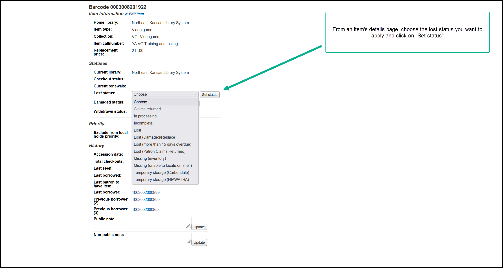
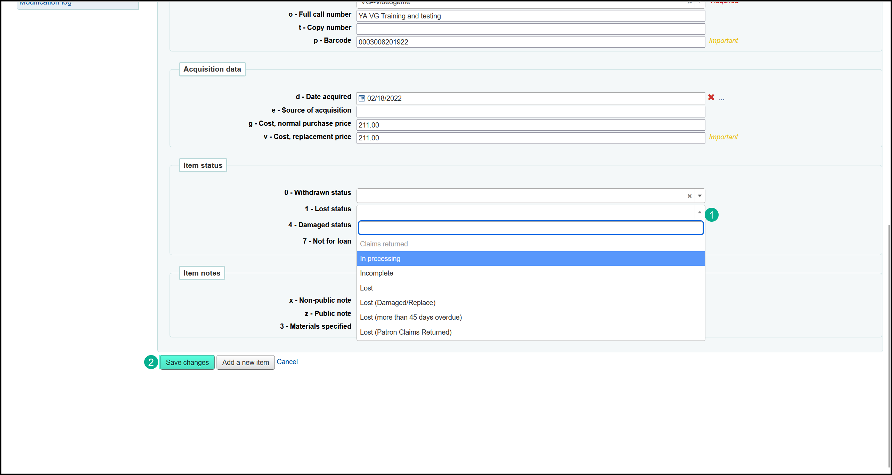
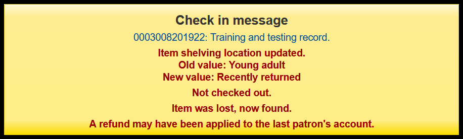

Lost status
Current lost statuses
There are several lost statuses at the present time:
- Claims returned
- In processing
- Incomplete
- Lost
- Lost (Damaged/Replace)
- Lost (more than 45 days overdue)
- Lost (more than 45 days overdue)
- Lost (Patron Claims Returned)
- Missing (inventory)
- Missing (unable to locate on shelf)
- Temporary storage (Carbondale)
- Temporary storage (HIAWATHA)
Depending on which library you are working at, you may not see all of these statuses.
Automatic deletion of “Lost” items
13 month after setting an item to any of these statuses, the item will be automatically deleted from the catalog.
Seting a lost status
- “Lost (more than 45 days overdue)”
- This status is applied automatically to items that have been overdue for more than 45 days.
- From the item details page

- From the add/edit item page

Claims returned
This status is used by the built-in claims returned feature
In processing
This is a status used at a couple of libraries while items are being cataloged
Incomplete
This is a legacy status that is being phased out
Lost
This is a legacy status that is being phased out
Lost (Damaged/Replace)
This is a legacy status that is being phased out
Lost (more than 45 days overdue) - lost status code 2
This status is applied automatically to items that have been overdue for more than 45 days. The underlying code for this status is lost status 2 and it cannot be added to an item by staff.
Lost (more than 45 days overdue) - lost status code 7
This status looks the same as the one above it, but the underlying code for this status is lost status 7 and staff can add this status to an item record.
Lost (Patron Claims Returned)
This is a legacy status that is only used at a couple of libraries.
Missing (inventory)
This is a status used for libraries doing a quick-and-dirty inventory process
Missing (unable to locate on shelf)
If you cannot find an item that is supposed to be checked in and on the shelf, you should mark the item with this status
Temporary storage (Carbondale)
This is a legacy status used while Carbondale Public Library was moving to their new building
Temporary storage (HIAWATHA)
This is a legacy status used while Morrill Public Library was remodeling their library
What happens at check-in
When you check in an item that is marked with any of the lost statuses:
- The item’s lost status is removed
- The item’s “Last seen” date is updated to the current date
- The item’s shelving location is temporarily updated to “Recently returned”
- If the last borrower was automatically billed for the replacment cost of the item, that fee should be automatically removed
- A check-in messages appears ths should be similar to this:

Known bugs
Sometimes when you check in an item that has been lost by a borrower, the automatic refund process does not always work as expected. There are several known bugs in the Koha community that relate to this issue